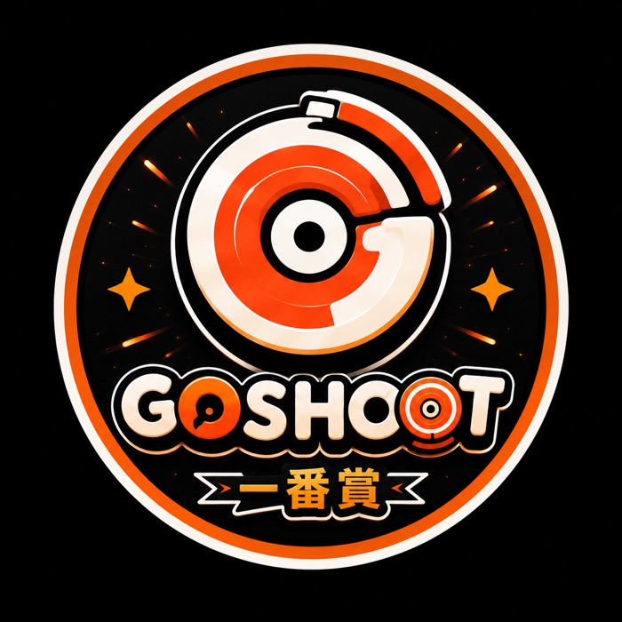
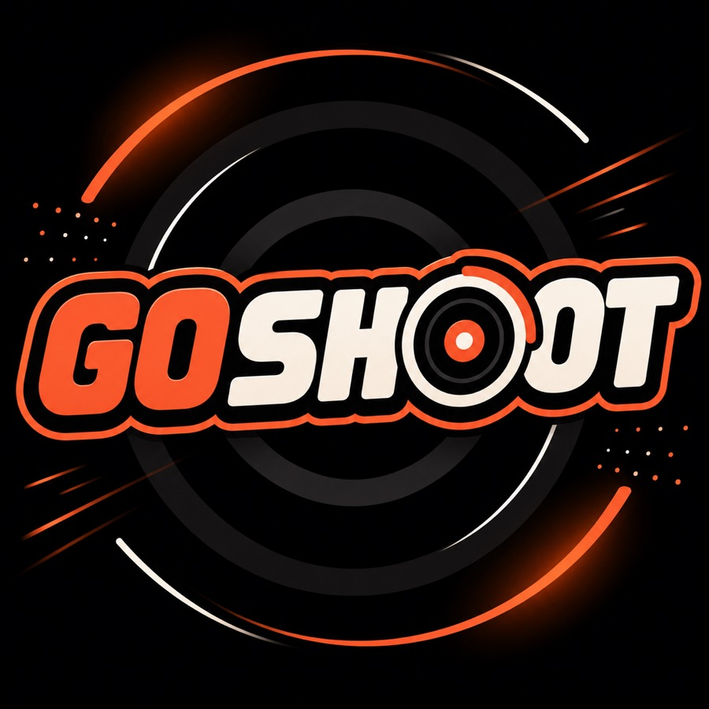

Go Shoot 是什麼？戰鬥陀螺發射口號由來、四代演進與台灣熱潮全解析
最近到處看到「Go Shoot」——新聞標題、政治人物、7-11 搶購潮都在喊。其實「Go Shoot」是戰鬥陀螺（Beyblade X）的官方發射口令：倒數「3、2、1，Go Shoot！」後同時射出陀螺開戰。在台灣，Go Shoot 也是一家戰鬥陀螺專門店＋線上一番賞的品牌。這頁把口號由來、四代演進與台灣熱潮一次講清楚。
①「Go Shoot」是什麼：官方發射口令的由來
「Go Shoot」是戰鬥陀螺對戰開場的發射口令（launch call）。兩位玩家把陀螺裝上發射器、對準戰鬥盤後，一起倒數——
「Shoot」就是「發射」，「Go Shoot」白話講就是「開打、射出去！」。這句口令從動畫延續到現實對戰，成為戰鬥陀螺玩家最熟悉的起跑訊號。倒數 3、2、1 是為了讓雙方同時發射、公平開局——早一秒晚一秒都會影響勝負，所以「Go Shoot！」那一聲就是全場最緊張的瞬間。
也因為這句口令太洗腦、太有記憶點，媒體、政治人物、玩家社群才會一喊成癮，讓「Go Shoot」從陀螺術語變成 2026 年的全民流行語。
②戰鬥陀螺四代演進小史
戰鬥陀螺（日文原名ベイブレード／Beyblade）在台灣風靡近 30 年、歷經四個世代，每一代都改寫一次玩法，也各自紅過一個時代：
現在最主流的是第四世代 Beyblade X：陀螺採「刃體 Blade／軸承 Ratchet／軸尖 Bit」三段式組合，換件就能改變攻擊、防禦、持久取向；戰鬥盤加了跑道，讓陀螺能加速衝刺、對撞更暴力。從爆転到 X 的完整故事，看〈戰鬥陀螺完整歷史：從爆転到 Beyblade X〉。
③台灣熱潮現況：為什麼滿街都在喊 Go Shoot
2026 年戰鬥陀螺在台灣二度爆紅，「Go Shoot」直接洗版整個網路。三個現象最明顯：
媒體「Go Shoot！」標題潮
各大新聞報導戰鬥陀螺時，標題幾乎清一色用「Go Shoot！」開頭，例如〈Go Shoot！童年戰場再開打！7-11 限量開賣戰鬥陀螺〉。這句口令等於成了戰鬥陀螺新聞的固定招牌。
連賴清德都喊 Go Shoot
熱潮連政治圈都跟上。據鏡報 2026 年 6 月 18 日報導，總統賴清德也在公開場合喊出「1、2、3，Go Shoot」，成為當時的時事哏；報導同時點出戰鬥陀螺「風靡 27 年、歷經 4 代」再成主流的關鍵——入門門檻低、配件好買、單場時間短，兼具收藏、改裝與競技。
7-11 搶購潮
通路端同樣火熱。2026 年 7 月 8 日，7-11 限量開賣 BX-50 天堂日輪隨機強化組（NT$350），盲盒有機會抽到稀有款「天環 0-80DS」——防禦型玩家的關鍵零件，掀起一波預購搶購潮（資料來源同上鏡報報導）。買不到現貨的玩家，也開始轉向線上一番賞碰運氣抽限定陀螺。
④我們是 Go Shoot：台灣戰鬥陀螺專門店＋線上一番賞
看到這裡你可能想問：那 goshoot.com.tw 又是誰？我們是台灣在地的戰鬥陀螺專門品牌 Go Shoot——把這句最有記憶點的口令，做成一間真的能玩、能抽、能對戰的店。


線上一番賞是我們的招牌：不定期上架 Beyblade X 戰鬥陀螺主題獎單，手機免下載、24 小時隨時抽，抽到限定配色陀螺可宅配，或到中和門市自取、直接上賽場試打。想搶不到 7-11 天環的替代玩法，這就是最快的入手管道。
門市地點：新北市中和區（捷運站旁）
營業：娃娃機 24H・戰鬥陀螺對戰區 16:00–24:00
電話：0976-507-911
Email：goshoot593@gmail.com
線上一番賞：goshoot-ichiban.vercel.app/draw ・ 站內主題頁 戰鬥陀螺一番賞
常見問題
Go Shoot 是什麼意思？
「Go Shoot」是戰鬥陀螺（Beyblade X）發射時的官方口令，倒數「3、2、1，Go Shoot！」後同時射出陀螺開戰。在台灣，Go Shoot 也是戰鬥陀螺專門店的品牌名——門市在中和捷運站旁，並經營 24H 線上一番賞。
Go Shoot 怎麼唸？
照英文直接唸「勾—舒特」（Go Shoot），意思是「發射／開打」，是戰鬥陀螺對戰前的起跑口令，喊完就把陀螺射出去。
戰鬥陀螺的發射口號是什麼？
標準口號是「3、2、1，Go Shoot！」。大家一起倒數 3、2、1，在喊出「Go Shoot！」的瞬間同步拉發射器，陀螺同時進場開戰。這波熱潮連總統賴清德都公開喊過。
Go Shoot 門市在哪？
門市位於新北市中和區、捷運站旁，主打戰鬥陀螺專門選物與 24H 無人娃娃機。電話 0976-507-911、Email goshoot593@gmail.com，詳細地址與時間以官網公告為準。
Go Shoot 線上一番賞是真的嗎？
是真的，為自家經營的正式服務。24H 隨時可抽、每抽必中獎，賞品可宅配或到中和門市自取；封盒採公開亂數、事後可驗算，機率與獎池公開透明。
怎麼開始玩戰鬥陀螺或線上一番賞？
玩實體：Beyblade X 世代最好上手，備一顆陀螺＋發射器＋戰鬥盤即可開打。線上抽：開啟 Go Shoot 線上一番賞，Google 登入→儲值 Go幣→選 Beyblade X 獎單→抽賞刮開即時開獎，手機免下載。